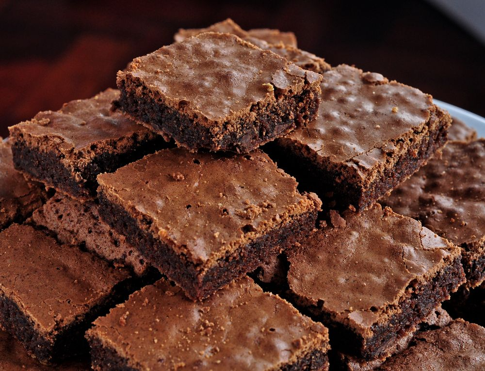

RECEITAS

BROWNIE
INGREDIENTES
- 5 colheres de manteiga
- 3 ovos
- 6 colheres de açúcar
- 12 colheres de farinha de trigo
MODO DE PREPARO
- 1 Derreta a manteiga e reserve
- 2 Enquanto derrete a manteiga, misture os 3 ovos e a açúcar e misture bem
- 3 Acrescente a manteiga derretida no ovo e o açúcar
- 4 Agora é so misturar o achocolatado e o trigo
- 5 Unte uma forma com manteiga e achocolatado
- 6 Leve ao forno a 180° C por 30 minutos